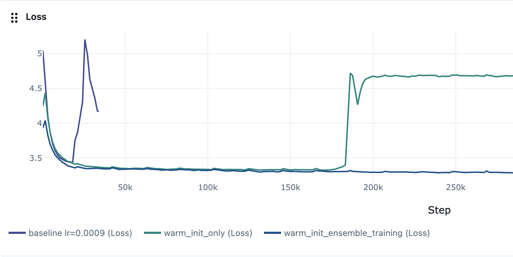
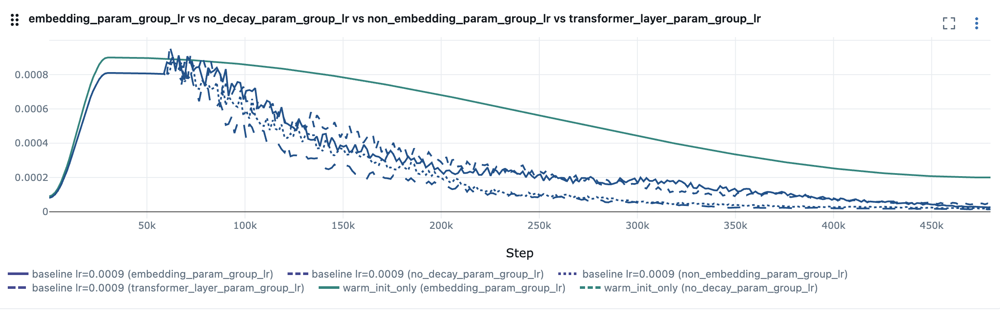

TL;DR
Large-scale distributed training assigns hundreds of GPU replicas to compute effectively identical gradient updates—a practice that leaves the entire space of learning rate configurations unexplored. We propose HDET (Hyperparameter-Divergent Ensemble Training), which repurposes these replicas for simultaneous learning rate exploration at negligible extra communication cost.
HDET alternates between a fan-out phase (replicas train under a structured spread of learning rates) and a converge phase (parameters are averaged via AllReduce every T steps). An auto-LR controller then uses cross-replica loss signals to adaptively steer the base schedule—no hyperparameter tuning required. On production recommendation models, HDET trains stably at 9× the learning rate that causes standard DDP to crash, achieving a lower final training loss (3.277 vs. 3.294).
The Problem: Wasted GPU Diversity
Modern large-model training parallelizes across hundreds of GPU replicas using data-parallel SGD (DDP). In the standard paradigm, every replica maintains an identical copy of model parameters and advances under an identical learning rate. Beyond improving gradient estimates through a larger effective batch, the additional hardware contributes no qualitative diversity to the optimization trajectory.
Meanwhile, the learning rate schedule is among the most consequential hyperparameter choices in large-model training. Popular schedules—one-cycle annealing, cosine decay, linear warmup-decay—must be specified before training begins, leaving practitioners to rely on expensive grid searches or heuristics calibrated on smaller proxy models.
The Core Insight: The N parallel replicas could explore N distinct learning rate trajectories simultaneously, at no additional hardware cost. If those diverging trajectories periodically merge through parameter averaging, the resulting model harvests ensemble-like generalization benefits within a single training run.
HDET: Fan-Out / Converge Cycle
HDET adds three targeted modifications on top of any existing DDP + OneCycleLR setup:
- Fan-out: Each of N GPU replicas trains under a distinct learning rate drawn from a symmetric spread [η̄(1−α), η̄(1+α)] around the current base schedule η̄, where α ≥ 0 is the spread ratio.
- Converge: Every T training steps, parameters are averaged across all replicas via AllReduce, producing a unified model that seeds the next fan-out round.
- Auto-LR: An optional controller uses cross-replica loss signals to update the base schedule between sync intervals.
Converge step: θr(t) ← (1/N) Σ θr'(t)
Setting α = 0 recovers standard DDP exactly
The extra communication cost over standard DDP is O(1/T)—in our production experiments (8 H100 GPUs, T=1,000), the extra AllReduce adds approximately 0.1% wall-clock time.

Figure 1: Training loss vs. steps at η_max = 0.0009. The standard baseline (gray) crashes at ~18K steps. Warm-Init alone (teal) survives to ~185K steps then diverges. HDET (dark blue) converges smoothly to 3.277—below Baseline-Low (3.294) trained at 9× lower learning rate.
The Auto-LR Controller
Building on the ensemble substrate, the auto-LR controller treats the relative training loss across replicas as a gradient-free performance signal. Replicas with below-average loss receive proportionally higher weight in a softmax-weighted average of per-rank learning rates; the resulting performance deviation drives a momentum-based velocity that shifts the base schedule up or down at each sync point.
Weight: wr(k) = exp(sr(k)) / Σ exp(sr'(k))
Update: v(k+1) = β·v(k) + (1−β)·Δ(k)
If high-LR replicas consistently outperform low-LR ones, the base schedule adapts upward; if the opposite holds, it adapts downward. This constitutes a within-run optimizer over the learning rate schedule, eliminating the need for a priori schedule selection.

Figure 2: Per-group LR schedules for four parameter groups. Solid: baseline (OneCycleLR). Dashed: HDET GPU 0 (lowest-LR replica). The auto-LR controller discovers that transformer layers should decay fastest while non-decay parameters maintain higher LR throughout—mirroring discriminative fine-tuning but emerging automatically from cross-replica loss signals.
Warm Noisy Initialization
HDET can optionally be seeded from a pre-trained checkpoint. Before the first fan-out phase, independent Gaussian noise is added to each replica's parameters, initializing each in a distinct neighborhood of a high-quality solution. This provides a warm start that accelerates early convergence and encourages replicas to explore different regions of the loss landscape.
Key Finding: Warm initialization alone is insufficient at aggressive learning rates—without periodic weight averaging, noisy weights compound with high-LR updates and eventually diverge (Warm-Init crashes at ~185K steps). Its role is to supply better-quality starting points for the ensemble, not to replace the stabilization provided by the fan-out/converge cycle.
Experimental Results
We evaluate on a production-scale news-feed dataset from a major social network, training jointly on three engagement tasks (Contribution, Like, LongDwell) for one epoch on 8 NVIDIA H100 GPUs. All variants use the same fixed AttnMVP backbone with identical architecture and optimizer.
| Model | Description | Avg LR | Train Loss |
|---|---|---|---|
| Baseline-Low | Standard DDP, α=0 | 0.0001 | 3.294 |
| Baseline-High | Standard DDP, α=0 | 0.0009 | 4.169 ✝ (crash) |
| Warm-Init | Perturbed init, no averaging | 0.0009 | 4.674 ✝ (crash) |
| HDET w/o auto-LR | LR spread + warm init | 0.0009 | 3.280 |
| HDET w/o warm init | LR spread + auto-LR, cold start | 0.0009 | 3.281 |
| HDET (full) | LR spread + warm init + auto-LR | 0.0009 | 3.277 ★ |
Key Findings
Stability Through Averaging, Not Initialization
Warm-Init diverges more severely than Baseline-High (4.674 vs. 4.169), confirming that weight averaging—not initialization—is the primary stabilizer. Because the LR spread always keeps some replicas conservative, the AllReduce consensus is guaranteed to lie in a stable region, preventing the divergence that a single aggressive LR cannot avoid.
Emergent Per-Group Learning Rate Decay
The auto-LR controller discovers distinct per-group decay rates without manual specification: transformer decays fastest (dense high-variance gradients converge quickly), non_decay parameters slowest (flat landscapes absorb gradient signal throughout), with embeddings and non-embedding layers in between. This ordering mirrors discriminative fine-tuning but emerges automatically from cross-replica loss signals.
Generalizes Beyond Learning Rate
The framework generalizes to any scalar hyperparameter that does not alter model architecture—dropout rate, attention temperature, weight-decay coefficient, label-smoothing. Inter-replica loss differences serve as zero-order hypergradients that guide the search direction, making HDET a general-purpose zero-cost hyperparameter search engine running inside the training loop.
Production Impact
HDET is implemented as a drop-in replacement for PyTorch's OneCycleLR scheduler, requiring no changes to model architecture, optimizer, or data pipeline. The model trained with HDET is deployed in the production ranking system and has been validated across 10+ independent training runs, consistently outperforming the conservative-LR baseline on both offline AUC and NE metrics.
Bottom Line: HDET converts the wasted uniformity of DDP replicas into a structured hyperparameter exploration ensemble. At negligible communication overhead (O(1/T)), it enables training at 9× higher learning rates that would otherwise cause divergence, while discovering better optima and autonomously adapting the learning rate schedule—all within a single training run.